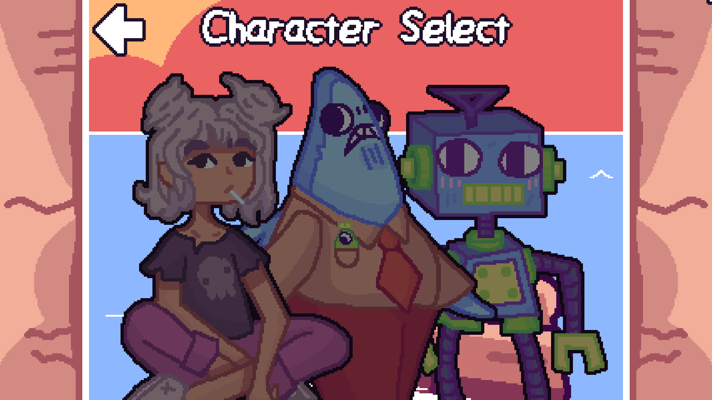
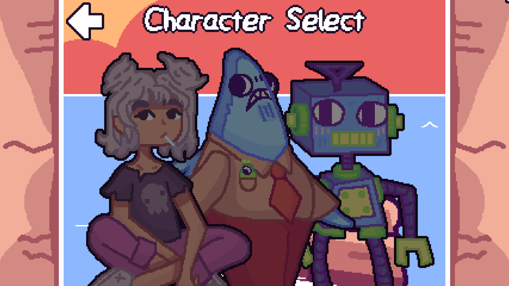
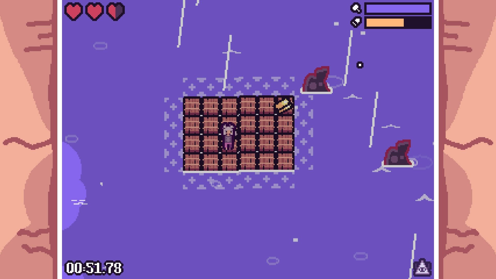
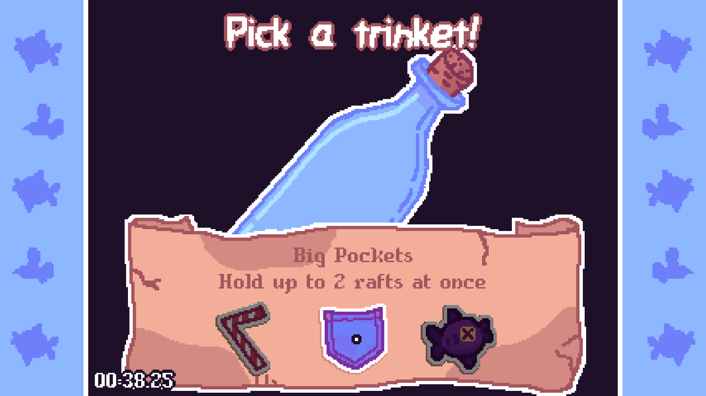
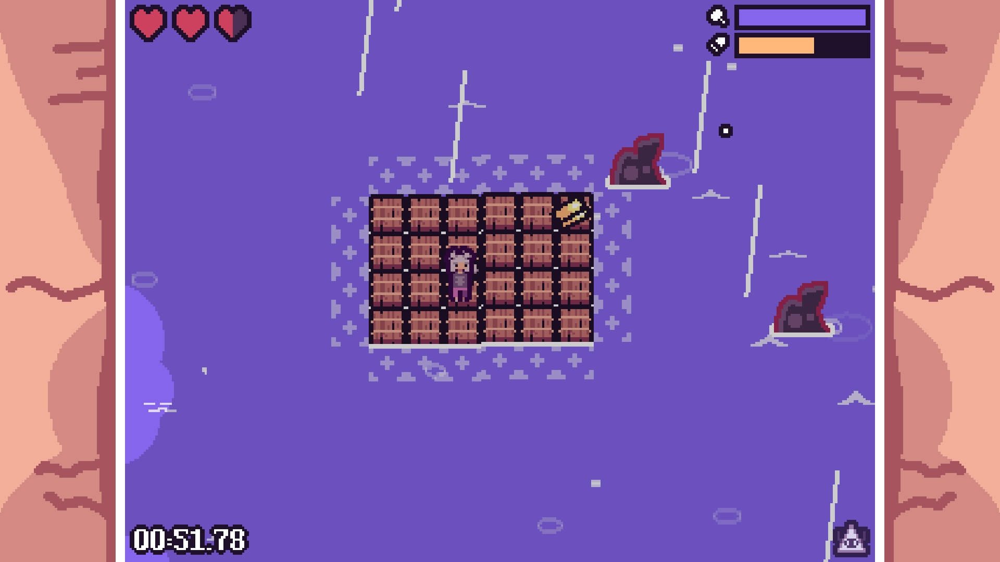
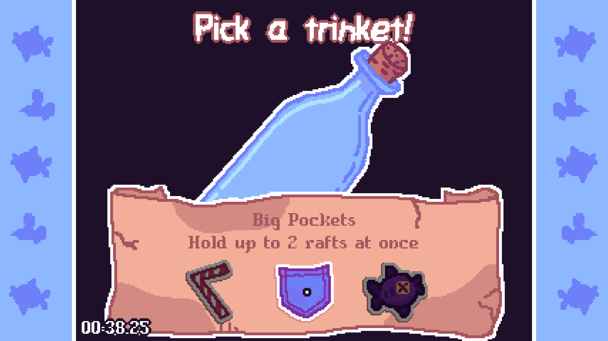

Super Raft Boat Classic
Released: February 22nd 2021
Genre: Rogue-lite
Created by: Shattered Journal Games
Role: Programmer
Engine: GMS2
Team Size: 4
Installs: +400,000
Game Description
The world's been flooded, and all you have is your Super Raft Boat. You keep sailing, hoping to find an island while fighting off the creatures of the sea. Can you reach the last island?
My Experience
This game was based off an older one of mine called Magnetic Terrain. I worked on it for a decent amount of my freshman year of college, but eventually dropped it and decided to start a new project (Floaty Fighters). I didn't want to redo it, and I didn't want to fix it, so I left it. A couple years later, my friends saw the game and wanted to try remaking it, but more compact, juicier, and with more roguelike elements. We originally made it for Global Game Jam, polished up for a couple weeks after, and released it for free! It's been a while since I've used Game Maker Studio 2; I mostly worked on the UI and other back-end systems. It was refreshing! Overall, very fun project to work on.

Trailer
Screenshots
 

 


